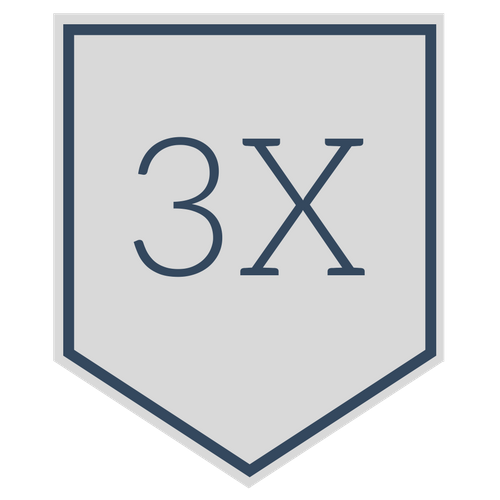
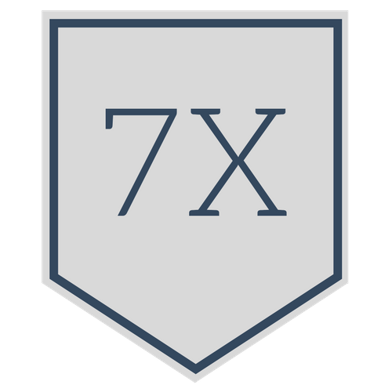

This is the admin page. To see the dashboard of a student, enter their student ID in the box on the right.
Error: {{ error }} {% endif %}
You have been active for {{ values[2] }} days. Keep up the good work!
Your activity is calculated based on login, video, problem, and reading data (one point per activity per day).
Your progress is determined by the number of problems you have completed successfully over the total number of problems in the course.
You currently have a {{ current }} day streak going!
|  |  | |
| Won {{ three_five_seven[0] }} times | Won {{ three_five_seven[1] }} times | Won {{ three_five_seven[2] }} times |
Your longest streak is {{ longest }} days.
Did you know that socialization among students enhances motivation and completion rates?
One way to interact with your fellow students is by posting to the course's forum page.